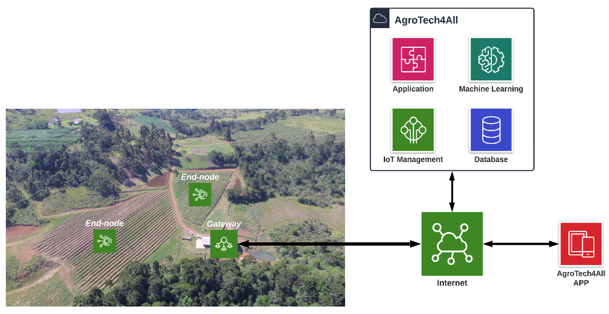

ATL-100 Firmware
ATL-100 is a multiparametric station developed by AgroTechLab (*Technology Development Laboratory for Agribusiness*) of IFSC (*Federal Institute of Santa Catarina*).
It can be used as meteorological station, agrometeorological station, hydrological station, aquaculture station, tide gauge station or fire monitoring station (forest or urban environment).
The data collected in the field by the ATL-100 stations are sent to the AgroTechLab Platform where they are filtered, stored and processed. These data are sources for insights which both (data and insights) can be accessed by users through websites or mobile applications.
{kind=link}
Table of Contents:
- Authors and License
- Changelog
- Versions support
- Technical Specifications
- Source Code Docs
ads1x15_config_tatl_adc_task_args_tatl_adc_telemetry_tatl_config_mqtt_client_tatl_config_ota_tatl_config_system_tatl_config_tatl_config_telemetry_tatl_config_webserver_tatl_config_wifi_tatl_data_adc_telemetry_tatl_data_telemetry_tatl_gw_telemetry_tatl_led_rgb_color_tatl_soil_telemetry_tatl_telemetry_tbasic_auth_info_tcoil_reg_params_tdiscrete_reg_params_tholding_reg_params_tinput_reg_params_tmoving_average()atl_adc_task()atl_adc_init()TAGatl_configatl_adc_handleatl_adc_input_mode_eatl_adc_input_modeatl_button_task()atl_button_init()button_evt_queuebutton_pressedatl_button_handleatl_config_create_default()atl_config_init()atl_config_commit_nvs()atl_config_erase_nvs()atl_config_mutexatl_i2c_master_init()atl_i2c_detect_devices()atl_i2c_device_exists()atl_i2c_master_bus_add_device()atl_i2c_receive()atl_i2c_transmit()i2c_mutex_timeouti2c_mutexbus_handleatl_led_task()atl_led_get_behaviour_str()atl_led_get_behaviour()atl_led_builtin_init()atl_led_builtin_toogle()atl_led_builtin_blink()atl_led_set_color()atl_led_set_enabled()led_mutex_timeoutatl_led_behaviour_strled_mutexled_builtin_stateled_stripatl_led_coloratl_led_handlebutton_countatl_led_behaviour_eapp_main()atl_modbus_get_num_device_params()atl_modbus_master_rs485_get_param_data()atl_modbus_master_rs485_init()atl_modbus_master_rs485_initialized()modbus_master_rs485_initializedmb_rs485_master_handleratl_modbus_device_parametersPhonyNameDueToError::CID_HOLD_HUMIDITYPhonyNameDueToError::CID_HOLD_TEMPERATUREPhonyNameDueToError::CID_HOLD_CONDUCTIVITYPhonyNameDueToError::CID_HOLD_PHPhonyNameDueToError::CID_HOLD_NITROGENPhonyNameDueToError::CID_HOLD_PHOSPHORUSPhonyNameDueToError::CID_HOLD_POTASSIUMPhonyNameDueToError::CID_HOLD_SALINITYPhonyNameDueToError::CID_HOLD_TDSPhonyNameDueToError::CID_HOLD_BATT_VOLTAGEPhonyNameDueToError::CID_HOLD_PTEMPholding_reg_paramsinput_reg_paramscoil_reg_paramsdiscrete_reg_paramsatl_mqtt_get_mode_str()atl_mqtt_get_mode()atl_mqtt_get_transport_str()atl_mqtt_get_transport()atl_mqtt5_event_handler()atl_mqtt_init()atl_mqtt_send_telemetry()atl_mqtt_client_restart()atl_mqtt_mode_stratl_mqtt_transport_strx200_analog_input_mqtt_handleclientatl_user_property_arratl_mqtt_mode_eatl_mqtt_qos_eatl_mqtt_modeatl_mqtt_qosatl_ota_get_behaviour_str()atl_ota_get_behaviour()atl_ota_behaviour_stratl_ota_behaviour_eadc_calibration_init()atl_dht_task()atl_bme280_task()atl_pwr_task()atl_uv_task()atl_anem_task()atl_pluv_task()atl_ws_task()atl_light_task()atl_soil_task()atl_telemetry_task()atl_telemetry_init()atl_telemetry_get_config()atl_telemetry_set_config()atl_telemetry_get_data()atl_telemetry_set_adc_data()atl_telemetry_data_mutexatl_telemetryatl_gw_telemetryatl_pwr_handleatl_bme280_handleatl_dht_handleatl_uv_handleatl_light_handleatl_anem_handleatl_pluv_handleatl_ws_handleatl_soil_handleatl_telemetry_handleadc1_handleadc1_cali_chan3_handleadc1_cali_chan4_handleadc1_cali_chan5_handledo_calibration1_chan3do_calibration1_chan4do_calibration1_chan5hex2int()urldecode()favicon_get_handler()css_get_handler()js_get_handler()http_404_error_handler()home_get_handler()conf_webserver_get_handler()conf_webserver_post_handler()conf_mqtt_get_handler()conf_mqtt_post_handler()conf_telemetry_get_handler()conf_telemetry_post_handler()conf_wifi_get_handler()conf_wifi_post_handler()conf_configuration_get_handler()api_v1_system_get_conf_handler()api_v1_system_set_conf_handler()conf_fw_update_get_handler()conf_fw_update_post_handler()conf_reboot_get_handler()conf_reboot_post_handler()httpd_auth_basic()basic_auth_get_handler()httpd_register_basic_auth()print_peer_cert_info()https_server_user_callback()atl_webserver_init()atl_webserver_get_mode_str()atl_webserver_get_mode()atl_webserver_mode_stratl_webserver_mode_eatl_webserver_modeatl_wifi_get_mode()atl_wifi_get_mode_str()atl_wifi_event_handler()atl_wifi_init_softap()atl_wifi_init_sta()atl_wifi_mode_strs_wifi_event_groupconn_retryatl_wifi_mode_eatl_wifi_modeads1x15_getConfig()ads1x15_getNextReadingTime()ads1x15_create()ads1x15_delete()ads1x15_setGain()ads1x15_getGain()ads1x15_getRange()ads1x15_setContinuous()ads1x15_isContinuous()ads1x15_setSampleRate()ads1x15_getSampleRate()ads1x15_readADC_SingleEnded()ads1x15_readADC_Differential_0_1()ads1x15_readADC_Differential_2_3()ads1x15_setComparator()ads1x15_setNotComparator()ads1x15_isComparator()ads1x15_startComparator_SingleEnded()ads1x15_getLastConversionResults()ads1x15_readNext()ads1x15_conversionDone()ads1x15_writeRegister()ads1x15_readRegister()ads1x15_read4to20mA()ads1x15_readVoltage()ads1x15_readDifferentialVoltage01()ads1x15_readDifferentialVoltage23()ads1x15_i2c_handleads1x15_gain_tads1x15_setNotComparator()ads1x15_isComparator()getGain()getRange()ads1115_addr